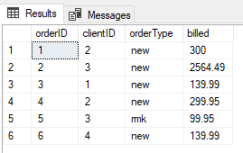
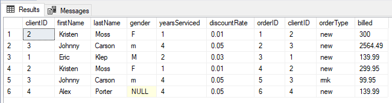
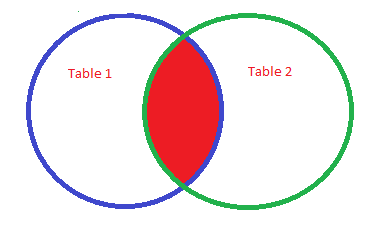
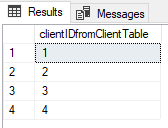
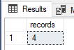
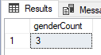
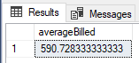
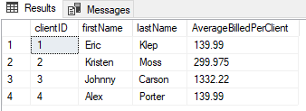

As a data analyst, advanced SQL is an important skill to have, because you need to go beyond just accessing data. You’ll have to deliver insights that help users take action or help data scientists transform data for machine learning. At my job, I’m constantly digging into data with advanced SQL techniques like aggregate functions, complex table joins, and common table expressions so that I can better understand how users are interacting with our products and help design features our customers need.
In my previous SQL article, I walked through all of the SQL basics to teach you how to create a database and table, insert records, and select records. This tutorial is a continuation of that article and builds on the skills and examples we previously covered. If you’re new to SQL or data analytics, check out the beginner’s guide before working through this advanced SQL tutorial.
In this tutorial, we’ll cover the following concepts and look at examples that will prepare you for writing advanced SQL queries for data analysis:
- Creating data for advanced SQL examples
- Creating tables using normalization concepts
- Joining tables
- Writing advanced SQL joins
- Aliasing tables and columns
- Counting records
- Aggregating averages in advanced SQL
- Summary
You can use the clickable menu to skip ahead to any section. Let’s get started!
1. Creating data for advanced SQL examples
If you’re already familiar with inserting records into a database table and want to skip the beginner’s SQL tutorial and start with these advanced SQL concepts, run the following script to create the dataset we used in the previous tutorial.
CREATE DATABASE exampleDatabase;
CREATE TABLE client (
clientID int not null
, firstName varchar(50)
, lastName varchar(50)
, gender varchar(1)
, yearsServiced int
, discountRate float
);
INSERT INTO client
values (2, 'Kristen', 'Moss', 'F', 1, 0.01)
INSERT INTO client
values (3, 'Johnny', 'Carson', 'm', 4, 0.05)
INSERT INTO client
values (3, 'Alex', 'Porter', null, 4, 0.05We’ll use this for the other tutorials in this article.
2. Creating tables using normalization concepts
We briefly covered the concept of normalization for relational data in the previous article. To build on that concept, let’s create a new table with two new SQL keywords that every advanced SQL analyst should know: IDENTITY and FOREIGN KEY.
Run the following scripts to create a new table and insert data into it:
CREATE TABLE orders (
orderID int IDENTITY(1,1) PRIMARY KEY
, clientID int FOREIGN KEY REFERENCES client(clientID)
, orderType varchar(3)
, billed float
)
INSERT INTO orders (clientID, orderType, billed)
values (2, 'new', 300.00)
INSERT INTO orders (clientID, orderType, billed)
values (3, 'new', 2564.49)
INSERT INTO orders (clientID, orderType, billed)
values (1, 'new', 139.99)
INSERT INTO orders (clientID, orderType, billed)
values (2, 'new', 299.95)
INSERT INTO orders (clientID, orderType, billed)
values (3, 'rmk', 99.95)
INSERT INTO orders (clientID, orderType, billed)
values (4, 'new', 139.99)
SELECT * FROM orders
Notice in our Insert statements we didn’t include the orderID column. Using IDENTITY(1,1) forces the variable orderID to automatically increment. That way we don’t need to specify an orderID when inserting our records. This is typically used with the PRIMARY KEY constraint.
To help keep our data normalized, we use FOREIGN KEY REFERENCES. It creates a constraint on a table by referring to a primary key in another table. It prevents SQL commands from breaking the link between the two tables. For example, I can’t delete client records if they are referenced by the key relationship in the orders table. By using a foreign key relationship, we don’t need to duplicate information about the client in the orders table. If we need client data with the orders data, we use the primary key/foreign key relationship to join the tables. This helps keep the data normalized in the database.
3. Joining tables
The first concept you need to master to write advanced SQL queries is the JOIN. In the real world, companies often store data in silos, separating things like customer data, application user data, and corporate financial data. To construct an insightful dataset, a data analyst will often need to pull data from various silos and join the records together into a data model that makes it easy to group records and calculate statistics.
Use a JOIN clause to combine the output from more than one table. Typically, tables are joined based on a related column between them like a primary key/ foreign key relationship.
We can join our ORDERS and CLIENT tables using the INNER JOIN clause based on the clientID field like this:
SELECT * FROM client
INNER JOIN orders ON orders.clientID = client.clientID
Notice our results are a combination of fields from both tables, appearing in the order the tables were joined. Since we’re selecting from CLIENT first, the fields from that table appear first.
Think about INNER JOIN like you would a Venn diagram. The circle on the left is table 1, the circle on the right is table 2, and where the two overlap is the records that return when using an inner join. Any record from table 1 or table 2 that doesn’t share the common field, won’t output in the result-set. Only the records that exist in the overlapping space will be retrieved by the INNER JOIN.

There are different types of joins that allow you to return data from different circles in the Venn diagram. For example, the LEFT OUTER JOIN would return all records from table 1. If the shared field does not exist in table 2, the row still outputs from table 1 with nulls in each field of column 2. Check out the official Microsoft documentation for an in-depth look at all of the possible join types available in SQL Server:
- Inner join
- Left outer join
- Right outer join
- Full outer join
- Cross join
In my experience, inner join and left outer join are the most common joins in SQL queries. However, when working with advanced SQL data types like strings, JSON or XML, cross joins become necessary.
4. Writing advanced SQL joins
Complex advanced SQL queries will use different join techniques that you should know are possible. For example, we can write a subquery in a JOIN clause like this:
SELECT t1.column_a, t2.column_b
FROM table_1 t1
INNER JOIN (SELECT column_a, column_b from table_2) t2 ON t2.column_a = t1.column_aJoining on a subquery can be very handy in situations where it’s less resource intensive to calculate statistics on the smaller dataset than trying to do it on the larger dataset.
There are also nested joins, which are joins within joins. For example:
SELECT t1.column_a, t2.column_b, t3.column_c
FROM table_1 t1
INNER JOIN (table_2 t2
INNER JOIN table_3 t3 on t3.column_c = t2.column_c) z on z.t2_column_a = t1.column_aNested joins are useful for when you need fields joined to one table, without impacting the joins on other tables. In the example above, we see table_2 has a nested join with table_3, and then that joined data is joined to table_1.
5. Aliasing tables and columns
Getting into advanced SQL, you’ll notice the queries can get quite long. In SQL we can alias our tables and fields to make our code shorter and easier to read. An alias is a temporary name. Additionally, SQL is not case sensitive when it comes to commands or fields. The following SQL query produces the same results as the above query:
select * from client c
inner join orders o on o.clientID = c.clientIDUsing aliases for our tables makes writing SQL much simpler and is a best practice when creating complex queries. Just make sure to use an alias that makes sense, and they must be unique. When aliasing fields, it is typical to use the AS keyword like this:
SELECT clientID AS clientIDfromClientTable FROM client
The aliased column name returns in the results-set; however, when referencing the field in the query we’d still use the original field name. For example, if we INNER JOIN the ORDERS table on clientID, we’d use the fieldname clientID, not the aliased name clientIDfromClientTable.
6. Counting records
Relational databases (RDBMS) often support mathematical and statistical operations that can be executed using SQL, like addition, subtraction, multiplication, division, finding an average, summing numbers, counting records, calculating variance and standard deviation, and manipulating dates. By learning advanced SQL concepts, you’ll be able to transform data into summary statistics which is an effective way to begin understanding how your data can help you make decisions. Here are some of the commonly used aggregate functions for data analysis:
- COUNT()
- AVG()
- MIN()
- MAX()
- SUM()
- StDEV()
- VAR()
The COUNT() function allows us to count the number of records in a table. There are two ways to use COUNT():
- COUNT(*) returns a count of rows that includes null values.
- COUNT(column_name) returns a count of records excluding the null values.
If we want to count how many records are in the CLIENT table, we use a query like this:
SELECT COUNT(*) AS records FROM client
As expected, a count of four returns since we have four records in the client table.
If we want to count how many records have a value in the gender field, we use a query like this:
SELECT COUNT(gender) as genderCount FROM client
Notice we only count 3 records with a value in the gender field because Alex Porter’s gender is NULL. A Null means the field is empty; it contains no value.
7. Aggregating averages in advanced SQL
The last aggregate function we’ll look at is AVG(), which is used a lot in advanced sql queries in data analytics. The AVG() function returns the calculated average of a numeric column. Aggregate functions are also used in window functions, which is an advanced SQL concept that builds on functionality not covered in this tutorial.
When using aggregate functions, remember to declare an alias for the aggregation or the column will not return a name. Columns without names can sometimes cause problems in complex queries.
Let’s say we want to calculate the average amount billed from our orders table. Our query would look like this:
SELECT AVG(billed) as averageBilled FROM orders
Calculating an overall average is easy; however, we sometimes need to figure the average value based on specified groups within our dataset. For example, say we wanted to find the average billed per client. For that we need to use the GROUP BY command.
Using GROUP BY groups records that have the same value. When using GROUP BY, we must include all the fields in our select statement except the ones being aggregated. Let’s combined what we’ve learned in this article and write a query that includes client information and calculates the average billed per client:
SELECT c.clientID, c.firstName, c.lastName, avg(o.billed) as AverageBilledPerClient
FROM client c
INNER JOIN orders o on o.clientID = c.clientID
GROUP BY c.clientID, c.firstName, c.lastName
8. Summary
While retrieving data using SQL can be simple, cleaning and aggregating the data requires skills that need to be practiced in order to master. In this tutorial we learned several concepts that will bring to you an advanced SQL skill level including table joins, aliasing variables, counting records, and applying aggregate functions and grouping.
These concepts are important to know because companies often keep data in different systems or database tables, leaving it up to data analysts to join them together and make sense of it all.